Personnaliser
Thème, disposition, paquets, rangs, sons : presque tout dans WikiFreeCards s'adapte à vos goûts. Et les sauvegardes vous permettent de tout retrouver.
Vingt thèmes pour l'interface
Clair ou sombre, sobre ou rétro : choisissez parmi vingt thèmes, de « Minuit étoilé » à « Arcade rétro, jeu vidéo 8 bits », en passant par « Parchemin » ou « Album de cartes à collectionner ».
Les réglages d'apparence couvrent aussi les couleurs, la taille du titre et des cartes, ainsi que les effets. Les captures de ce site montrent d'ailleurs le logiciel sous plusieurs thèmes.

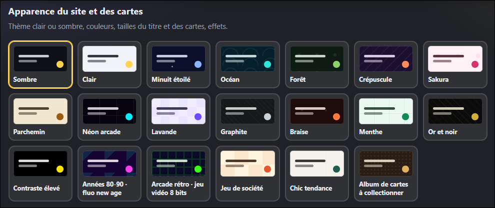
Une disposition à votre main
Choisissez l'emplacement du menu de navigation, la taille de ses boutons (jusqu'aux icônes seules ou à un menu replié) et la forme de la barre d'outils de la collection.
Une maquette en direct montre où se placent le menu, la barre d'outils et le paquet, et l'effet est immédiatement visible sur la page.

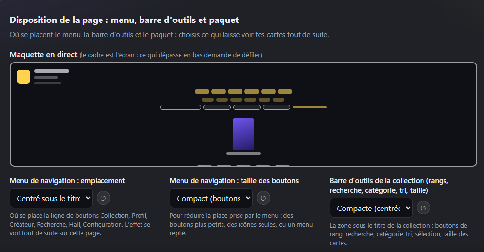
Des rangs à votre image
Chaque rang a ses propres règles et sa propre apparence :
- un seuil (nombre minimal de vues par jour) et une probabilité d'apparition ;
- un nom et des lettres (trois au maximum), affichées en haut à gauche des cartes, sur les boutons de filtre et dans les noms des fichiers exportés ;
- un motif, trois couleurs et un reflet animé.
Les probabilités sont relatives : deux rangs réglés à 1 et 4 apparaissent respectivement dans 20 % et 80 % des cas.
Le dernier palier, Personnalisée, sert de thème de base aux cartes du Créateur. Il accepte jusqu'à cinq lettres et n'a ni seuil ni probabilité. L'aperçu se met à jour en direct.

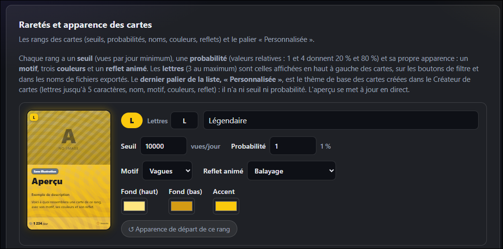
Vingt et un styles de paquets
Le paquet aussi se personnalise : son style, parmi les modèles ci-dessous, et le nombre de cartes qu'il contient.

Classique violet 
Or 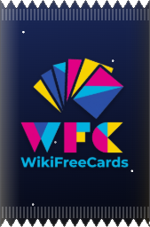
Nuit étoilée 
Holographique 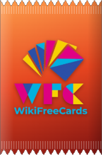
Braise 
Océan 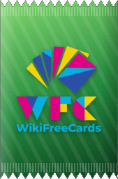
Forêt 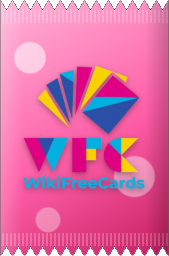
Bonbon 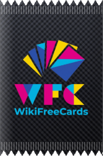
Carbone 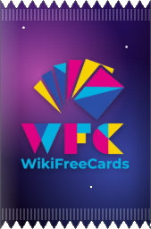
Cosmos 
Améthyste 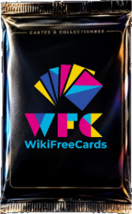
Black 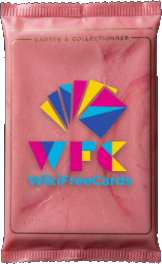
Bubblegum 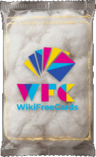
Coton 
Diamant 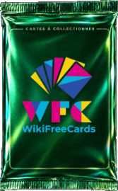
Émeraude 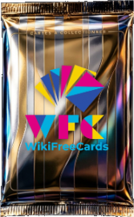
Or et argent 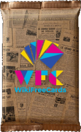
Journal cartonné 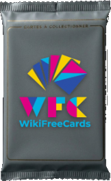
Plastique gris 
Rubis 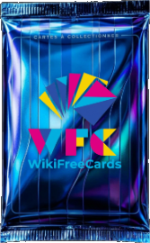
Saphir
Sons et musique d'ambiance
Les sons associés aux événements du logiciel sont personnalisables, et vous pouvez ajouter une musique d'ambiance pour accompagner vos séances de collection.
Sauvegarder et restaurer
Quatre niveaux de sauvegarde sont proposés :
- Ultra complète : paramètres actuels, collection et arborescence complète du programme ;
- Complète : paramètres actuels et collection ;
- Uniquement les paramètres : les réglages de la configuration ;
- Uniquement la collection : cartes, catégories, vitrines, corbeille et réserve.
Une sauvegarde se réimporte depuis un fichier .zip.

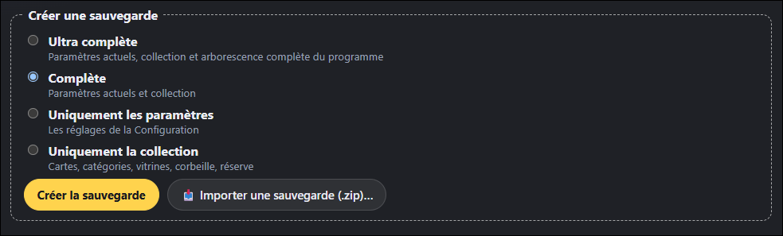